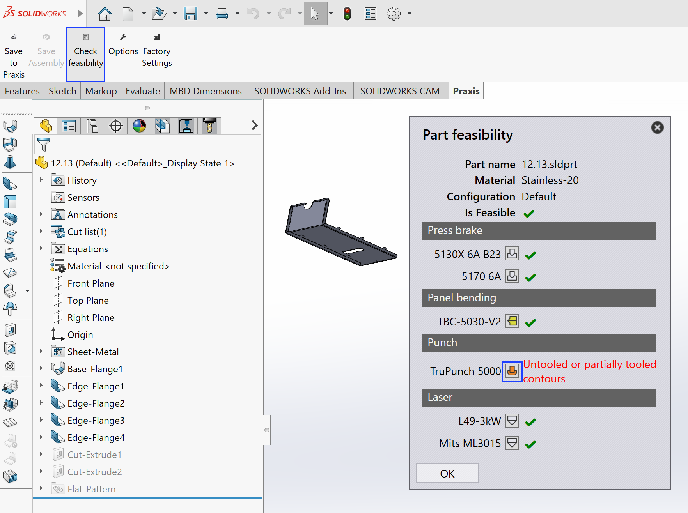

Vérifier la faisabilité
La fonction de faisabilité des pièces dans l’extension SolidWorks TruSmartCAM permet aux utilisateurs de vérifier si une pièce de tôlerie peut être produite avec succès en utilisant les machines et configurations d’outillage d’usine disponibles dans TruSmartCAM.
Cette fonctionnalité reproduit les mêmes étapes d’analyse que le moteur TruSmartCAM effectue lors du téléchargement réel de la pièce, mais s’exécute localement—sans modifier ni remplacer les pièces existantes dans la bibliothèque de pièces TruSmartCAM.
-
La boîte de dialogue de faisabilité affiche les résultats d’analyse pour toutes les machines d’usine disponibles configurées dans TruSmartCAM.
-
L’état de chaque machine est indiqué comme :
-
Feasible - La pièce peut être traitée avec succès.
-
Warning - La pièce peut être traitée avec des limitations (par exemple, contraintes de pliage ou de découpe).
-
Error - La pièce a échoué au test de faisabilité en raison d’un problème bloquant.
-

-
Cliquez sur l’icône
 pour ouvrir le fichier de technologie évalué
(TecZone ou MetaCAM) pour une inspection détaillée.
pour ouvrir le fichier de technologie évalué
(TecZone ou MetaCAM) pour une inspection détaillée.
Pour les assemblages, la même fonctionnalité effectue une analyse de faisabilité complète pour chaque composant de tôlerie individuel.
-
Les résultats sont affichés dans la boîte de dialogue Assembly Feasibility, listant le matériau, la configuration et l’état de faisabilité de chaque pièce.
-
La sélection d’une pièce affiche ses informations détaillées dans le panneau de droite, y compris le matériau, la taille, le poids et le résultat de faisabilité.

-
L’analyse de faisabilité des assemblages est effectuée pièce par pièce, en utilisant la même logique que les vérifications de faisabilité des pièces individuelles.
-
Le processus s’arrête automatiquement à la première erreur bloquante où une progression supplémentaire n’est pas possible.
-
Seules les pièces de tôlerie avec des matériaux et des paramètres valides sont analysées.
-
Les composants non métalliques sont ignorés mais toujours listés à titre de référence.
-
Étant donné que l’exécution de faisabilité n’enregistre ni ne télécharge de données vers TruSmartCAM, elle peut être utilisée en toute sécurité pour la validation de conception en phase initiale et les scénarios d’analyse "what-if".
|
Vous devez disposer d’une licence TecZone ou MetaCAM valide pour ouvrir et examiner les fichiers de technologie générés liés aux résultats de faisabilité. |